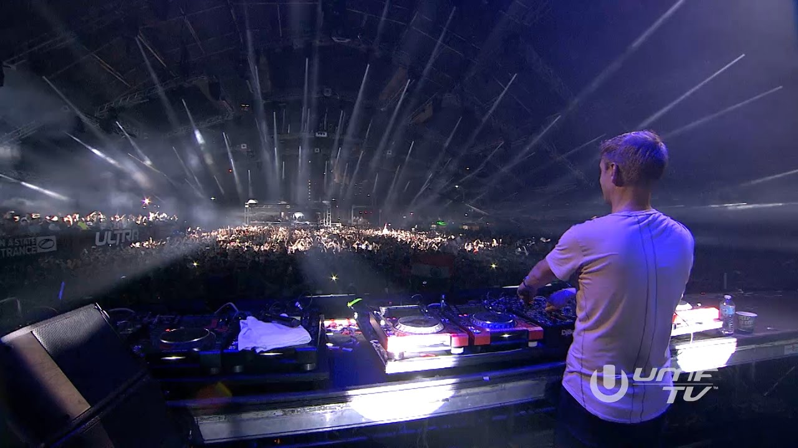
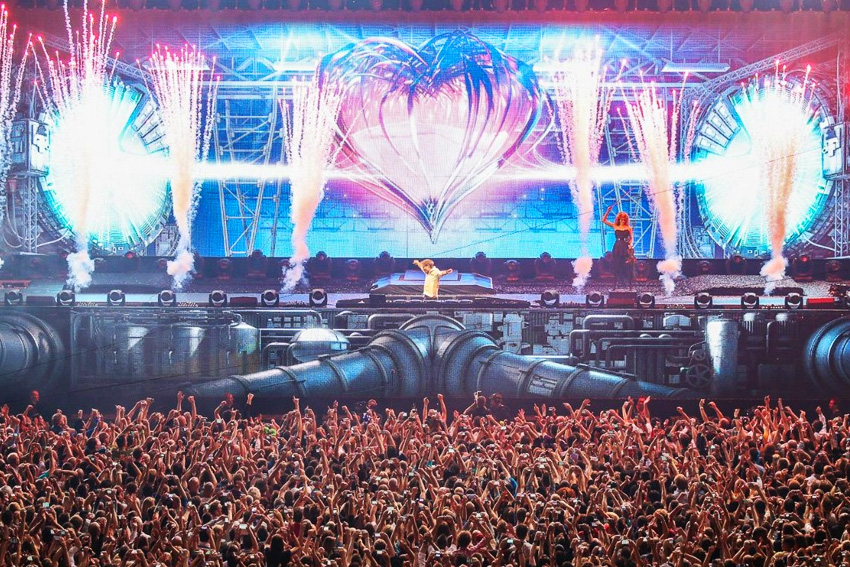

News

Dec 1 - Blasterjaxx @ Uniun

Dec 26 & 27 - Solaris Music Festival @ Rebel

Dec 29 - Eric Prydz @ Rebel
New Releases

Steve Angello - Break Me Down

Tritonal - Call Me

San Holo - One Thing

Martin Garrix & David Guetta - So Far Away
Armin Van Buuren

Armin Van Buuren is Dutch DJ who specializes in progressive trance. Before he became the international sensation he is today with top hits such as “This is what it Feels Like,” and “Another You,” he was influenced by his father at a very young age. When he was a child, his dad was an avid record buyer. As well as this, a very close friend of his by the name of Ben Liebrand who was a Dutch DJ and remixer at the time became his greatest influencer. Through the years Armin began releasing demos on his own and eventually signed with Cyber Records. By 2002, Armin released his first CD titled: 76. And from then, he never looked back. Highly regarded as the “King of Trance,” Armin now owns his label called Armind and has a weekly radio show released called “A State of Trance” which has been running since June 1, 2001.
 Follow Armin Van Buuren here!